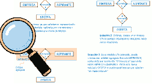
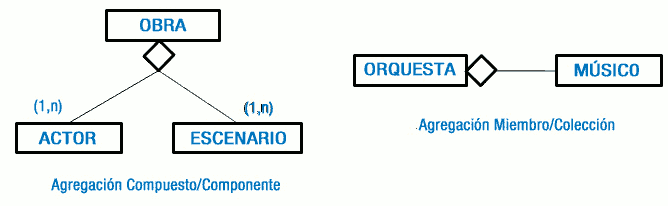

La agregación es una abstracción a través de la cual las relaciones se tratan como entidades de nivel más alto, siendo utilizada para expresar relaciones entre relaciones o entre entidades y relaciones.
Supongamos un ejemplo en el que hemos de modelar la siguiente situación: una empresa de selección de personal realiza entrevistas a diferentes aspirantes. Puede ser que, de algunas de estas entrevistas a aspirantes, se derive una oferta de empleo, o no. En el siguiente gráfico se representan tres soluciones, las dos primeras erróneas y una tercera correcta, utilizando una agregación.
Como has podido observar, la representación gráfica de una agregación se caracteriza por englobar con un rectángulo las entidades y relación a abstraer. De este modo, se crea una nueva entidad agregada que puede participar en otras relaciones con otras entidades. En este tipo de relación especial de agregación, la cardinalidad máxima y mínima de la entidad agregada siempre será (1,1) no indicándose por ello en el esquema.
Existen dos clases de agregaciones:
- Compuesto/componente: Un todo se obtiene por la unión de diversas partes, que pueden ser objetos distintos y que desempeñan papeles distintos en la agregación. Teniendo esto en cuenta, esta abstracción permite representar que un todo o agregado se obtiene por la unión de diversas partes o componentes que pueden ser tipos de entidades distintas y que juegan diferentes roles en la agregación.
- Miembro/Colección: Un todo se obtiene por la unión de diversas partes del mismo tipo y que desempeñan el mismo papel en la agregación. Teniendo esto en cuenta, esta abstracción permite representar un todo o agregado como una colección de miembros, todos de un mismo tipo de entidad y todos jugando el mismo rol. Esta agregación puede incluir una restricción de orden de los miembros dentro de la colección (indicando el atributo de ordenación). Es decir, permite establecer un orden entre las partes.
En la siguiente figura puedes apreciar los tipos de agregación y su representación gráfica.
